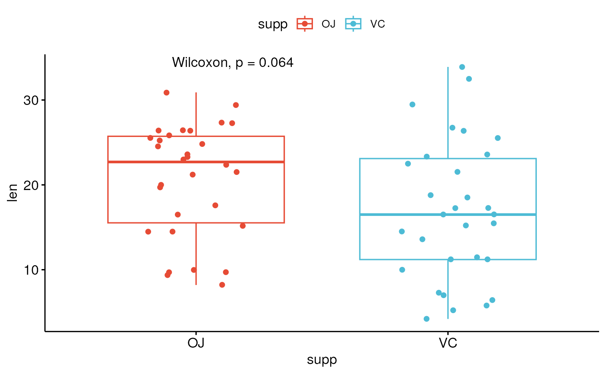
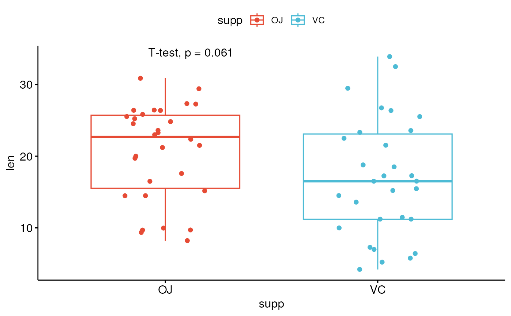

Add mean comparison p-values to a ggplot, such as box blots, dot plots and stripcharts.
stat_compare_means(
mapping = NULL,
data = NULL,
method = NULL,
paired = FALSE,
method.args = list(),
ref.group = NULL,
comparisons = NULL,
hide.ns = FALSE,
label.sep = ", ",
label = NULL,
label.x.npc = "left",
label.y.npc = "top",
label.x = NULL,
label.y = NULL,
vjust = 0,
tip.length = 0.03,
bracket.size = 0.3,
step.increase = 0,
symnum.args = list(),
geom = "text",
position = "identity",
na.rm = FALSE,
show.legend = NA,
inherit.aes = TRUE,
...
)Arguments
- mapping
Set of aesthetic mappings created by
aes(). If specified andinherit.aes = TRUE(the default), it is combined with the default mapping at the top level of the plot. You must supplymappingif there is no plot mapping.- data
The data to be displayed in this layer. There are three options:
If
NULL, the default, the data is inherited from the plot data as specified in the call toggplot().A
data.frame, or other object, will override the plot data. All objects will be fortified to produce a data frame. Seefortify()for which variables will be created.A
functionwill be called with a single argument, the plot data. The return value must be adata.frame, and will be used as the layer data. Afunctioncan be created from aformula(e.g.~ head(.x, 10)).- method
a character string indicating which method to be used for comparing means.
- paired
a logical indicating whether you want a paired test. Used only in
t.testand in wilcox.test.- method.args
a list of additional arguments used for the test method. For example one might use
method.args = list(alternative = "greater")for wilcoxon test.- ref.group
a character string specifying the reference group. If specified, for a given grouping variable, each of the group levels will be compared to the reference group (i.e. control group).
ref.groupcan be also".all.". In this case, each of the grouping variable levels is compared to all (i.e. basemean).- comparisons
A list of length-2 vectors. The entries in the vector are either the names of 2 values on the x-axis or the 2 integers that correspond to the index of the groups of interest, to be compared.
- hide.ns
logical value. If TRUE, hide ns symbol when displaying significance levels.
- label.sep
a character string to separate the terms. Default is ", ", to separate the correlation coefficient and the p.value.
- label
character string specifying label type. Allowed values include "p.signif" (shows the significance levels), "p.format" (shows the formatted p value).
- label.x.npc, label.y.npc
can be
numericorcharactervector of the same length as the number of groups and/or panels. If too short they will be recycled.If
numeric, value should be between 0 and 1. Coordinates to be used for positioning the label, expressed in "normalized parent coordinates".If
character, allowed values include: i) one of c('right', 'left', 'center', 'centre', 'middle') for x-axis; ii) and one of c( 'bottom', 'top', 'center', 'centre', 'middle') for y-axis.
- label.x, label.y
numericCoordinates (in data units) to be used for absolute positioning of the label. If too short they will be recycled.- vjust
move the text up or down relative to the bracket.
- tip.length
numeric vector with the fraction of total height that the bar goes down to indicate the precise column. Default is 0.03. Can be of same length as the number of comparisons to adjust specifically the tip lenth of each comparison. For example tip.length = c(0.01, 0.03).
If too short they will be recycled.
- bracket.size
Width of the lines of the bracket.
- step.increase
numeric vector with the increase in fraction of total height for every additional comparison to minimize overlap.
- symnum.args
a list of arguments to pass to the function
symnumfor symbolic number coding of p-values. For example,symnum.args <- list(cutpoints = c(0, 0.0001, 0.001, 0.01, 0.05, Inf), symbols = c("****", "***", "**", "*", "ns")).In other words, we use the following convention for symbols indicating statistical significance:
ns: p > 0.05*: p <= 0.05**: p <= 0.01***: p <= 0.001****: p <= 0.0001
- geom
The geometric object to use to display the data for this layer. When using a
stat_*()function to construct a layer, thegeomargument can be used to override the default coupling between stats and geoms. Thegeomargument accepts the following:A
Geomggproto subclass, for exampleGeomPoint.A string naming the geom. To give the geom as a string, strip the function name of the
geom_prefix. For example, to usegeom_point(), give the geom as"point".For more information and other ways to specify the geom, see the layer geom documentation.
- position
A position adjustment to use on the data for this layer. This can be used in various ways, including to prevent overplotting and improving the display. The
positionargument accepts the following:The result of calling a position function, such as
position_jitter(). This method allows for passing extra arguments to the position.A string naming the position adjustment. To give the position as a string, strip the function name of the
position_prefix. For example, to useposition_jitter(), give the position as"jitter".For more information and other ways to specify the position, see the layer position documentation.
- na.rm
If FALSE (the default), removes missing values with a warning. If TRUE silently removes missing values.
- show.legend
logical. Should this layer be included in the legends?
NA, the default, includes if any aesthetics are mapped.FALSEnever includes, andTRUEalways includes. It can also be a named logical vector to finely select the aesthetics to display. To include legend keys for all levels, even when no data exists, useTRUE. IfNA, all levels are shown in legend, but unobserved levels are omitted.- inherit.aes
If
FALSE(the default for most ggpubr functions), overrides the default aesthetics, rather than combining with them. This is most useful for helper functions that define both data and aesthetics and shouldn't inherit behaviour from the default plot specification. Set toTRUEto inherit aesthetics from the parent ggplot layer.- ...
other arguments to pass to
geom_textorgeom_label.
See also
Examples
# Load data
data("ToothGrowth")
head(ToothGrowth)
#> len supp dose
#> 1 4.2 VC 0.5
#> 2 11.5 VC 0.5
#> 3 7.3 VC 0.5
#> 4 5.8 VC 0.5
#> 5 6.4 VC 0.5
#> 6 10.0 VC 0.5
# Two independent groups
#:::::::::::::::::::::::::::::::::::::::::::::::::
p <- ggboxplot(ToothGrowth, x = "supp", y = "len",
color = "supp", palette = "npg", add = "jitter")
# Add p-value
p + stat_compare_means()

# Change method
p + stat_compare_means(method = "t.test")

# Paired samples
#:::::::::::::::::::::::::::::::::::::::::::::::::
ggpaired(ToothGrowth, x = "supp", y = "len",
color = "supp", line.color = "gray", line.size = 0.4,
palette = "npg")+
stat_compare_means(paired = TRUE)
 # More than two groups
#:::::::::::::::::::::::::::::::::::::::::::::::::
# Pairwise comparisons: Specify the comparisons you want
my_comparisons <- list( c("0.5", "1"), c("1", "2"), c("0.5", "2") )
ggboxplot(ToothGrowth, x = "dose", y = "len",
color = "dose", palette = "npg")+
# Add pairwise comparisons p-value
stat_compare_means(comparisons = my_comparisons, label.y = c(29, 35, 40))+
stat_compare_means(label.y = 45) # Add global Anova p-value
#> Warning: cannot compute exact p-value with ties
#> Warning: cannot compute exact p-value with ties
#> Warning: cannot compute exact p-value with ties
# More than two groups
#:::::::::::::::::::::::::::::::::::::::::::::::::
# Pairwise comparisons: Specify the comparisons you want
my_comparisons <- list( c("0.5", "1"), c("1", "2"), c("0.5", "2") )
ggboxplot(ToothGrowth, x = "dose", y = "len",
color = "dose", palette = "npg")+
# Add pairwise comparisons p-value
stat_compare_means(comparisons = my_comparisons, label.y = c(29, 35, 40))+
stat_compare_means(label.y = 45) # Add global Anova p-value
#> Warning: cannot compute exact p-value with ties
#> Warning: cannot compute exact p-value with ties
#> Warning: cannot compute exact p-value with ties
 # Multiple pairwise test against a reference group
ggboxplot(ToothGrowth, x = "dose", y = "len",
color = "dose", palette = "npg")+
stat_compare_means(method = "anova", label.y = 40)+ # Add global p-value
stat_compare_means(aes(label = after_stat(p.signif)),
method = "t.test", ref.group = "0.5")
# Multiple pairwise test against a reference group
ggboxplot(ToothGrowth, x = "dose", y = "len",
color = "dose", palette = "npg")+
stat_compare_means(method = "anova", label.y = 40)+ # Add global p-value
stat_compare_means(aes(label = after_stat(p.signif)),
method = "t.test", ref.group = "0.5")
 # Multiple grouping variables
#:::::::::::::::::::::::::::::::::::::::::::::::::
# Box plot facetted by "dose"
p <- ggboxplot(ToothGrowth, x = "supp", y = "len",
color = "supp", palette = "npg",
add = "jitter",
facet.by = "dose", short.panel.labs = FALSE)
# Use only p.format as label. Remove method name.
p + stat_compare_means(
aes(label = paste0("p = ", after_stat(p.format)))
)
# Multiple grouping variables
#:::::::::::::::::::::::::::::::::::::::::::::::::
# Box plot facetted by "dose"
p <- ggboxplot(ToothGrowth, x = "supp", y = "len",
color = "supp", palette = "npg",
add = "jitter",
facet.by = "dose", short.panel.labs = FALSE)
# Use only p.format as label. Remove method name.
p + stat_compare_means(
aes(label = paste0("p = ", after_stat(p.format)))
)